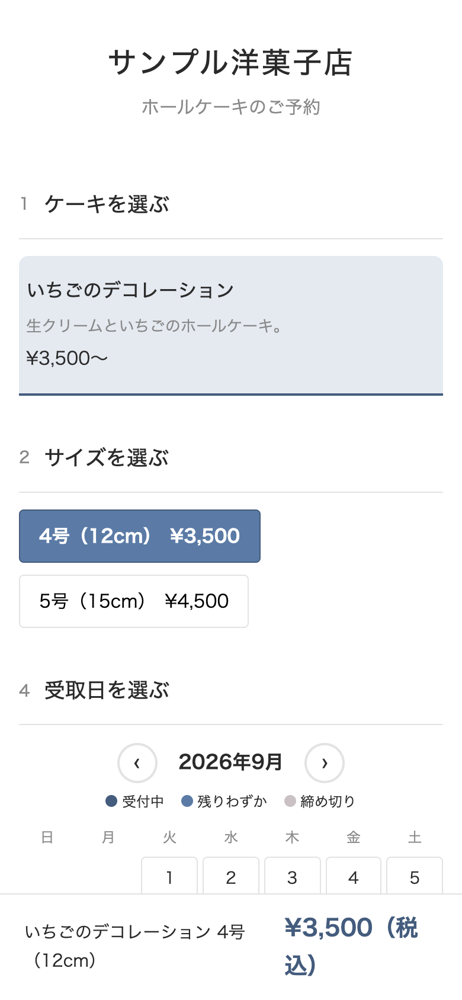
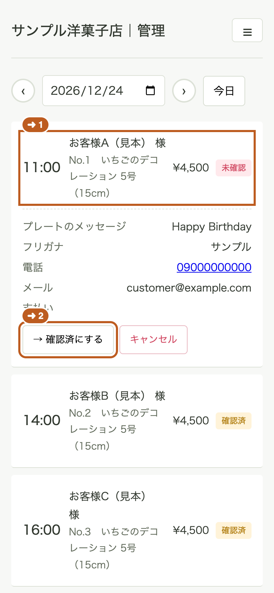
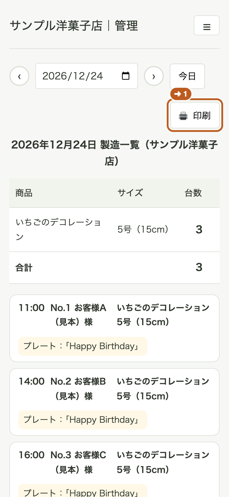

使い方ガイド 更新 2026.09.07
第0章 このシステムでできること
「ケーキ屋さんの予約帳」は、オーダーケーキの受注・キャパ管理・製造/受渡をまとめて行うシステムです。お客様用の予約ページと、お店用の管理画面があります。
お客様が見る画面：予約ページ#
お客様はスマホで、次の順に選ぶだけで予約が完了します。
- ケーキを選ぶ → 2. サイズを選ぶ → 3. カスタマイズ（フルーツなど） → 4. 受取日を選ぶ → 5. ご記入欄 → 6. お客様情報 → 内容の確認 → 注文

- 受取日のカレンダーでは、予約できる日だけを選べます（定休日・締切を過ぎた日・満枠の日は自動で選べなくなります）
- 注文するとお客様に確認メールが自動で届きます。メールの専用リンクから、お客様がご自身で変更・キャンセルもできます（期限はお店が決められます。第5章）
お店が見る画面：管理画面#
受取リスト（店頭用）
その日の予約が受取時間順に並びます。注文内容の確認・キャンセルの操作はここで行います。電話で受けた予約も 「予約の直接登録」 からここに入れられます。（第3章）

製造ケーキ一覧（厨房用）
その日に作るケーキが「商品×サイズごとの台数」で集計されます。そのまま印刷して厨房に貼れます。（第3章）

設定・商品
- 設定：定休日・締切・1日の上限・受取時間など「お店の受け方のルール」を決めます。（第4章）
- 商品：ケーキの名前・写真・サイズと価格・選択肢を登録します。クリスマスなどの季節商品も、期間を設定するだけで自動で出て自動で締め切ります。（第2章）
全体の流れ#
お客様が予約ページで注文
↓ 自動
お店に通知メール ＋ お客様に確認メール
↓
受取リストに予約が並ぶ（未確認 → 確認済）
↓
製造ケーキ一覧で当日の製造数を確認・印刷
電話やDMでの受付と違い、選択肢や入力欄で注文内容をそろえ、設定した締切に合わせて予約を受け付けられます。
はじめて使う方は、はじめてガイドへ進んでください。